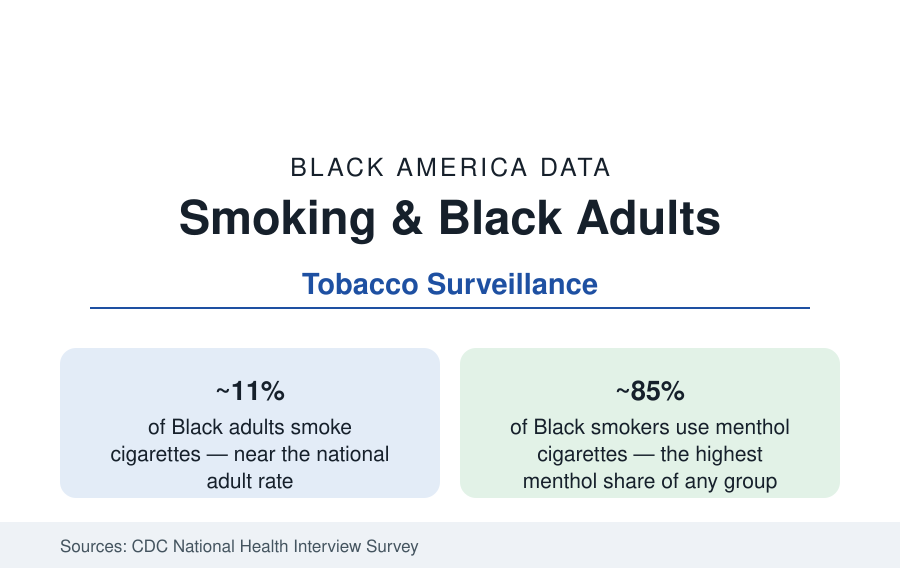

Black Public Health
Smoking and Tobacco Use Among Black Adults: Rates, Menthol, and Outcomes
About 11 percent of Black adults smoke — near the national rate — with menthol cigarettes used by roughly 85 percent of Black smokers. The CDC tobacco data.

About 11 percent of Black adults smoke cigarettes — near the national adult rate of roughly 11 to 12 percent — a figure that would suggest an unremarkable tobacco profile until the composition data are opened: some 85 percent of Black smokers use menthol cigarettes, the highest share of any group; Black smokers smoke fewer cigarettes per day on average yet record comparable or worse disease outcomes; and tobacco-related illness remains among the leading causes of death in the Black population. This article reports the tobacco surveillance data.
Rates and Patterns of Use
The National Health Interview Survey's trend lines show Black adult smoking declining in parallel with the national curve — from above 20 percent in the early 2000s to the current ~11 percent — with the decline driven by cohort replacement (each younger generation initiating less) and cessation. The initiation data carry the profile's distinctive fact: Black smokers have historically begun smoking later than the national pattern (late teens into the twenties rather than mid-teens) and smoke fewer cigarettes daily, with a higher share of non-daily smoking — a lighter-consumption profile that the biomarker studies complicate, finding Black smokers absorb nicotine and certain carcinogens more intensively per cigarette (slower nicotine metabolism on average, deeper extraction from menthol's cooling draw), which is the literature's standing explanation for disease rates that exceed what the consumption counts predict.
Menthol: The Composition Fact
Menthol is the tobacco data's central racial variable. Roughly 85 percent of Black smokers use menthol brands, against roughly 30 percent of White smokers — a distribution built by a half-century of targeted marketing documented in the industry's own records (advertising density in Black neighborhoods and media, sponsorships, and price promotions, assembled in the public-health literature from the tobacco document archives) and maintained by menthol's pharmacology: the cooling and anesthetic effects ease initiation and, in the cessation studies, are associated with lower quit success. The regulatory history is the data's moving edge: menthol was exempted from the 2009 flavored-cigarette ban; the FDA's proposed rule to prohibit menthol cigarettes has advanced and stalled across administrations and remains, at this writing, unfinalized — a status this reference reports as unresolved. The modeled estimates in the literature project that a menthol prohibition would produce substantial additional cessation among Black smokers over time; industry analyses dispute magnitudes; the direction is not seriously contested in the peer-reviewed record.
Cessation: Attempts High, Success Lower
The cessation data show the effort clearly. Black smokers report attempting to quit at rates above the national average in the survey data — roughly six in ten made a quit attempt in recent years — while succeeding at lower rates, a gap the literature attributes to the menthol composition, lower use of evidence-based cessation aids (pharmacotherapy and counseling utilization run lower in the treatment data), and the access variables that run through this section. The clinical guidelines' machinery — quitlines, Medicaid coverage of cessation treatment (which varies by state in the policy tables), and provider advice (Black patients report receiving quit advice at lower rates in the visit data) — composes the system's side of the gap.
Outcomes and the New Products
The outcomes arrive in the cancer and cardiovascular files: lung cancer incidence among Black men runs above the national male rate despite the lighter consumption history, and tobacco's share of the Black mortality burden — through cancer, heart disease, and stroke combined — remains among the largest single preventable contributions. The new-product data add the next chapter: e-cigarette use among Black adults runs below White rates in the adult surveys, youth vaping rates among Black high school students run below the national student average in the school surveys, and little-cigar and cigarillo use — the flavored, cheaply priced segment marketed in the same neighborhoods — runs above it, the category the flavor-policy debates now center on.
Reading the Tobacco Data
The tobacco profile's discipline is to hold the average and the composition apart: a smoking rate at the national figure, achieved with later starts and lighter daily use — and a product mix, treatment-access pattern, and marketing history that convert that average exposure into above-average harm. The menthol number, 85 percent, is the single statistic the whole profile hangs on.
More in Black Public Health
Hypertension Among Black Adults: Prevalence, Control, and Consequences
About 55 percent of Black adults have hypertension — the highest rate of any U.S. group. Prevalence, onset, control, and the stroke, heart, and kidney consequences in the data.
Diabetes Among Black Adults: Prevalence and Complications
Nearly one in five Black adults has diabetes, diagnosed or undiagnosed — and its complications fall with particular weight. The CDC data on prevalence, control, and outcomes.
Black Life Expectancy: The Gap at Birth and Its Causes
Black life expectancy at birth is about 73 years, roughly five years below the national figure — the summary measure of every health gap in this section. The CDC data.
Source: Centers for Disease Control and Prevention, National Health Interview Survey and tobacco surveillance; CDC Office on Smoking and Health; Campaign for Tobacco-Free Kids research summaries.